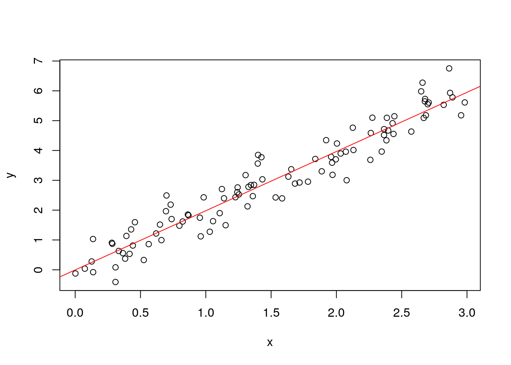

Statistics for Biologists: An Introduction to the application, understanding, and philosophy of statistical analysis in life science
2021-05-10
Preface
Why is statistics in life science important?
Fortunately for me (and at this point maybe unfortunately for some readers), there is virtually no single domain in the life sciences that has not been invaded by statistical analysis. And the reason for that is easy: Statistics is the best and sometimes only way we have to gain insight from data.
Tell a little bit about Fisher and other famous Biostatisticians.
Tell about the deadly pitfalls of falsely applied statistics (and mention John Ioannidis)
What to expect from this course
This course will teach you the foundations of statistics in life science as comprehensible as possible. The material will neither lean towards the mathematical theory of statistics, nor will it be purely applied, since both of these topics are comprehensive enough to fill multiple volumes on their own. I rather chose to go the golden middle path. Here, three major methods will alternate in their utilization and depth. These are: mathematical concepts, programming, and (most importantly) textual explanations of everything of importance for the concept or problem at hand to be understood thoroughly.
The mathematics will be used according to the rule “as much as necessary, as little as possible”. This is NOT a course about mathematical statistics, so don’t be afraid about to much maths. Nevertheless, statistics is a subdiscipline of mathematics after all, and therefore, there is no way to avoid mathematics altogether. But there is no reason to be discouraged, because all equations and where necessary the derivations thereof will be explained in great detail. After this course, you will be able to read and navigate through the basic mathematics of statistics like an experienced sailor can read the waves and stars to find their1 way home.
The second method of teaching used in this course, the programming, is as essential as the mathematics. Although it is called programming, we will mainly focus on the analysis of data by means of the programming language R (depending on your career, programming usually encompasses much more than mere data analysis). It might take some time until you get used to using R for data analysis, because I expect most readers to come from a background where data analysis was performed in one of the many available spreadsheet programs (e.g. Excel). Such kind of software is also called WYSIWYG (what you see is what you get) because it works with buttons and widgets to click on and drag around. Although visually appealing, using a graphical user interface (GUI) for data analysis is actually hindering compared to code based software like R. I too came from this background and had to get used to this kind of analysis software. At this point I can give you the spoiler that all efforts learning code based data analysis are more than repaid once you get stuck with your graphical analysis software. For a more elaborate pleading in favor of R see this section about the perks of R in data analysis. In order to follow through the course you will have to have R installed on your machine (it works on all prevalent OS). Also, you will need some additional packages throughout the course. R packages are like libraries of code (and are often even called libraries) because they contain code written by other people in order to facilitate our analysis pipeline and focus on the fun part without having to meddle too much with the programming part itself. The code I use in this course will be embedded in blocks. Most of the time, such a block is subsided by its output, like in the following example:
# Setting a random seed reproducible simulation
set.seed(123)
# Defining the predictor variable (uniformly distributed)
x <- runif(n=100, min=0, max=3)
# Defining the response variable (normally distributed)
y <- rnorm(n=100, mean=2*x, sd=0.5)
# Creating a linear model from x and y
lf <- lm(y ~ x)
# Extracting the model coefficients
coefs = lf$coefficients
# Creating a scatter plot from x and y
plot(x,y)
# Draw a line with parameters from the model
abline(coefs[1], coefs[2], col="red")
# View summary statistics of the linear model
summary(lf)##
## Call:
## lm(formula = y ~ x)
##
## Residuals:
## Min 1Q Median 3Q Max
## -1.11899 -0.30661 -0.00987 0.29817 1.10861
##
## Coefficients:
## Estimate Std. Error t value Pr(>|t|)
## (Intercept) -0.00448 0.09803 -0.046 0.964
## x 1.98503 0.05697 34.843 <2e-16 ***
## ---
## Signif. codes: 0 '***' 0.001 '**' 0.01 '*' 0.05 '.' 0.1 ' ' 1
##
## Residual standard error: 0.4846 on 98 degrees of freedom
## Multiple R-squared: 0.9253, Adjusted R-squared: 0.9245
## F-statistic: 1214 on 1 and 98 DF, p-value: < 2.2e-16In the preceding example, there are two blocks of code, and two outputs. The first block generates some data, fits a linear model using these data, and plots the data and a trend line, while the second block prints the summary of the linear model. The output are the model parameters and statistics. Don’t worry if you don’t understand the code or the output for now, we will come to it at an appropriate time. All code in this course is explained on the run so that you never get the feeling of being lost in it. The example above is only there to show how it will look like. Throughout this course, I encourage you to copy the code presented, and execute it on your own machine. Alter it, change the parameters, change the data, try different things with it. There is hardly a scientific discipline where practice leads to a steeper learning curve and a better understanding of the subject than in coding (mathematics and physics may be at a similar level). In the worst case, your code breaks and you check what went wrong. Learning something in the troubleshooting process is a valuable lesson and once you start code based data analysis you will encounter errors on a regular basis. More often than not, the error is just a typo or due to other simple reasons. You will learn how to read and interpret error messages like the morning newspaper. Believe me, the rate at which you are confronted with errors does not really change with gained expertise. What changes is your attitude regarding the troubleshooting process.
The last pillar of the didactics used in this course is the actual text, where I explain what we do, how we do it, and most importantly, why we do it. When learning something, I always favor a well-told narrative of the subject over a sterile and indifferent way of conveying it. Although science and statistics ought to be neutral and unbiased, this should not be confused with boring, and the teaching of these subjects can and should be done in a passionate and animating way. For that reason, where appropriate, I will not only talk about the theory of a subject itself, but also to some extent about its impact on society, its use and misuse in science and politics, or about the bright minds behind the concept and their reason of deduction. After all, no topic is isolated and its beauty is best seen when put into context and with regards to the interdisciplinary ecosystem it is embedded in. We will for example see that some of the most famous statistical concepts were derived from people working in the biological sciences who tried to evaluate their observations. I beg your pardon if for these reasons the course might appear somewhat inflated but I think it is better to write three sentences too much than missing an important one, thereby sending the reader on a frustrating, day-long quest through the realms of the internet in order to find an explanation for the topic at hand (although also such an odyssey can contribute to your understanding).
Each chapter will be accompanied by some exercises. These are categorized into easy, medium, and difficult. They will test your understanding of the mathematical theory, demand computational analysis, data visualization, and predictions by programming your way through the problem. Finally, there will be some questions testing your general understanding and statistical intuition that you will have hopefully developed up to this point of the course. Don’t refrain if you cannot solve some of the problems, as long as you gain the impression that you understand the course material well enough to make rational decisions regarding the analysis of your own data.
To sum it up, after finishing this course, you will feel confident around different types of data, and recognize potential pitfalls in the design of experimental studies. You will not start sweating in the face of the myriads of options to analyze your data and be able to distinct different types of statistical tests and models. In short, you will have learned how to think statistically.
What not to expect from this course
All efforts in teaching any scientific topic are in vain if the reader is not willing to put effort into the understanding of the taught subjects. I will try my best to convey the information of this tutorial in an intuitive and understandable way. Eventually however, it is up to you, the reader, to think about the material, play around with the code examples, give the exercises a shot and, most important, transform knowledge to insight. In the end, you should be able to apply the learned material to your own research (or approach the things you do daily from a statistical point of view). I will not lie, this demands a certain amount of time and discipline. After all, Rome wasn’t built in one day. The result, however, is more than rewarding. As a biologist by training myself (I pursued my undergraduate studies in the field of synthetic biology), I sympathize with anyone who encounters problems with leaving their comfort zone and entering the realms of mathematical reasoning, understanding and dissecting equations, and statistical programming. However, the target groups of this tutorial are scientists and students who aim to become scientists in the not-so-far future. From such an audience I think it is legitimate to expect general curiosity about learning new things and especially those that make your life easier on the long run and will eventually make you a better scientist.
No Jack of all trades
Although this tutorial aims to be quite comprehensive, I am totally aware of the fact that no single person can learn and know everything, according to the old saying “Jack of all trades, master of none”. After my undergraduate studies in biology I chose to pursue my graduate studies in the fields of theoretical biology and bioinformatics, with specialization on the analysis of genomic data. By doing so, I was not able to stay up to date with all the biological methods that are used in the wet lab. So in order to perform sound science, I have to rely on the expertise of wet lab scientists to actually design and conduct the experiments. I have the greatest respect towards all biologists and other wet lab scientists who struggle with the obstacles of their research, like maintaining their samples, dealing with suboptimal environmental conditions, tedious purification steps, time management for complex experiments and all the other things I do not know much about. However, as a bioinformatician it is my duty to know biology at least to some extent. Domain knowledge for any data analyst is paramount to select the right models to analyze the data at hand or answer a specific scientific question. As we will see later there is sometimes no single best way to analyze your data and the precise analysis can depend on the context given. But this kind of expertise is no one-way road.
MENTION HERE THE IMPORTANCE OF THE FIRST POINT.
For this simple reason it is not a choice, but a necessity for any scientist in the life sciences, to know at least the foundations of statistics (and yes dear reader, these foundations comprise more than a simple t-test command). And while this tutorial aims at giving you exactly this foundations at hand, it can by no means cover all fields of modern statistics and analysis of biological data. However, this is not expected from any experimental scientist. It is very likely that at some point in your career you will encounter or generate data that will surpass your skills in data analysis. This is completely normal and whole professions like the biostatistician and the bioinformatician have emerged in order to analyze these data (these professions are of great demand nowadays due to the vast amount of data being generated by high-throughput sequencing in recent years). But it is still your job to perform rudimentary data analysis with small to moderate sized data sets independently. Also you should be in the position to find a common language with the biostatistician/bioinformatician at your department, when discussing experimental design and analysis. This fruitful conversations and consequently successful projects can only emerge if you know statistics to some extent, like the analyst knows the biology and principles of wet lab methods to some degree.
An ode to R
I first encountered the statistical programming language R when I had to accomplish the data analysis for the data I collected for my Bachelor thesis. Back then I had no idea about programming, R, or applied statistics (besides maybe the t-test, how much of your undergraduate statistics course do you remember and apply in your daily work?). Back then my supervisor forced me to do the data analysis using R and RStudio2. Although a medical biologist by training, he loved programming, statistics and data analysis. I shall thank him forever for opening that door for me (he actually rather pushed me through it for my own good). As soon as I started doing my data analysis using R and RStudio, I realized the treasure I had discovered. During the remainder of this section, I will share with you the perks of R and RStudio that I learned appreciating over time.
The first and probably biggest advantage of R or any other programming language over spreadsheet software like Excel is that the analysis using R is self-documenting. What I mean by that is when you do your data analysis in R, you usually create an empty script first, which you then fill with the code that you need to load your data, analyze it at will and create and save output statistics and plots. This fundamentally different approach compared to spreadsheet software allows you to come back to your analysis at any time and break it down bit-by-bit. Imagine you get some experimental data and need to extract some summary statistics from them. After some time, you realize you made a mistake and have to redo the analysis. If you did it using some spreadsheet software, then good luck redoing all the clicks and drags and whatever steps you did in a reproducible way. If you used R instead, you just open the script you wrote for the analysis in RStudio, go through it line by line, change the erroneous part, and rerun the whole script. You virtually eliminate the potential for human errors, when doing the same thing twice. This also saves a huge amount of time, depending on the complexity of the analysis and the amount of data. If then anybody asks you what you precisely did, you can just hand them over the script or explain it to them like you would read a book. If you used some spreadsheet software instead, chances are high you wrote every single step down in your manual lab-book. If you are sufficiently meticulous in your documentation to have written it down so that you can actually redo a complex analysis, I bet writing down the whole analysis took you more time than you’d like to admit. This doubling of work almost never happens when using R. Also you are less prone to work with the raw data when using R. I have seen on multiple occacions now that some scientist hands me over a spreadsheet, where not only the raw data was included, but they also created already summary statistics and plots and whatever in the same spreadsheet. Never do that. Although I think of it as self-evident, I have seen this habit too often to not emphasize it here. When doing your data analysis, you load your data into R and then manipulate the version of the data in your running session3. Once you are done with the analysis, you save a new document with whatever insight you gained from your data. Never manipulate your raw data. This is only one of the many good habits you’ll take to you heart once you start working with data more professional and with R.
Second, some analyses can be really specific to the problem at hand. Chances are you search the internet for days in order to solve a specific problem or implement the solution as desired using some spreadsheet software. As the term programming language implies, R can be programmed, meaning that quite often it proves to be handy if you can create the desired solutions using a few lines of code which you then implement in your analysis. Many times when you want to use a specific program to analyze your data, this program expects a very specific way of organization within you dataset. If you can’t find someone who did the exact same data transformation before and published a program that you can use you might run into trouble. If you are able to transform your data yourself using some basic programming, there are no strings attached to you4. However, this is no book about programming, and therefore we will not dive deep into the core concepts of programming languages, but focus on the code that is necessary to conduct sound data analysis and statistics. But keep in mind the power you gain if you can solve a huge amount of problems that would otherwise prevent you from doing what you want to do using only a few lines of code.
Third, and related to the first point, sometimes you want to test different models and compare their fit to your data or create different summary statistics, based on the question to be answered. Using spreadsheet software (by now you probably guessed it already) it can take a lot of time to copy data, transform it, handle missing data appropriately and so on. Using R, these kind of tasks are usually accomplished by changing a few lines of code slightly, maybe by tweaking some function parameters or looping over different models to compare them. And again, the single steps are much more tractable if you do this using a programming based approach compared to spreadsheet software.
Roadmap
Chapter 1 will focus on descriptive statistics. Every experiment will at some point yield data that are to be analyzed 5. As the name already gives away, descriptive statistics aims at summarizing your data and putting it into context, like the kind of distribution your data follows. This topic will be covered at the very beginning for two reasons. First, it does not demand a large amount of statistical knowledge and can be applied directly after obtaining the data at hand. Therefore, you can directly see the fruits of your work without having to meddle to strong with statistical concepts and assumptions. Second, it is an important first step in further analysis. Since we can usually only obtain a (small) sample size compared to a much larger population, the aim of the overall statistical analysis is to infer certain properties of the population based on the sample at hand. But in order to do so, we first have to describe how the sample data looks like and behaves. Hence, we begin with descriptive statistics.
Chapter 2 will lead us to the concept of distributions. Although the term “distribution” is used frequently in everyday life, its meaning in stats lingo is not so well-known. We will explore the differences between data distributions and theoretical distribution. Also, you will learn why and how to apply the important concepts of distribution parameters and parameter estimation. Some important types of distributions will be presented and their characteristics illuminated. Also, we will see how to fit a distribution to the data at hand. The concepts learned here will form the foundations for the subsequent chapters and will prove invaluable for your further understanding of statistics.
In Chapter 3, we will dip our toes in the deep sea of regressions and explore the concept of generalized linear models (GLM). Don’t worry if this means nothing to you right now, it will all come at an appropriate time. This chapter is the logical consequence of the principles of distributions that we have learned before. The difference is that for GLM, the distribution parameter is no longer constant but depends on some variable within our data. In this way, we can explore the relations between two different data variables, the independent variable and the dependent variable. Although many people learning statistics do not connect these two concepts, this chapter paves the way for understanding statistical testing, as will be shown later.
Chapter 4 will deal with the concepts of correlation and covariance. These topics are in some way the next step after linear regression, because for the analysis of correlation and covariance, you need to lose the constraint of one variable depending on another, as is the case for linear regression. In correlation analysis, no dependency is assumed, and therefore only the tendency of different data variables to vary together is analyzed.
Chapter 5 will bring us finally to the concepts of statistical testing. Although some readers render this topic to be the most important one for their work and would therefore like to jump into it right away, there is a reason for putting it at the end of the course. Statistical testing unites all the knowledge and skills we have gained along the way. We will introduce the most important statistical tests and associate their theoretical background and results with the content of the preceding chapters. So I kindly ask you to not be hasty and enjoy the ride we take all the way down until this chapter in order to understand and appreciate it as much as possible.
Finally, there is the Appendix. Here, one part will be about the more advanced mathematics of the introduced topics. Whenever I deem the mathematical details of a topic to be useful for a deeper understanding but out of scope and not necessary for this course, I will refer to this part. Here, the mathematics will be explained thoroughly and calculations will be done step-by-step, so that readers with non-mathematical background can follow along. The curious reader can then come here and try to retrace the mathematics that can lead to a deeper insight of the topic. However, this part is not necessary for understanding the content of this course and can be ignored at will.
Throughout this course, I will use the generic plural, even for a single person like in this case, where possible. If at some point the chosen examples do not reflect the reader’s identity it is to be mentioned that this is not intentional and should not be interpreted as such. The grammatical gender of a word does not depend on the identity or gender of the reader↩︎
RStudio is what is called an Integrated Development Environment(IDE). This kind of software is there for helping you writing, testing, and managing code, and since R is a statistical programming language, R-Studio is particularly designed for data analysis tasks. If you have it not already, I strongly recommend downloading the version suitable for your OS under the RStudio download page↩︎
or if you work with spreadsheet software, create a copy and do the analysis using this copy↩︎
Because of this precise feature of being programmable, in recent years hundreds of R packages were written specifically with the aim of doing biological data analysis. Most of these packages are collected and distributed using the package manager Bioconductor. Although you probably won’t need or use most of the packages provided there it can give you quite a nice impression of how versatile and powerful the programming paradigm is compared to other approaches for data analysis↩︎
Although maybe unintuitive at first sight, we will stick with the plural use of the word ‘data’. The reason is twofold. First, the word ‘data’ is already the plural form of the singular word ‘datum’. Second, an experiment usually yields more than a single data point (or datum)↩︎